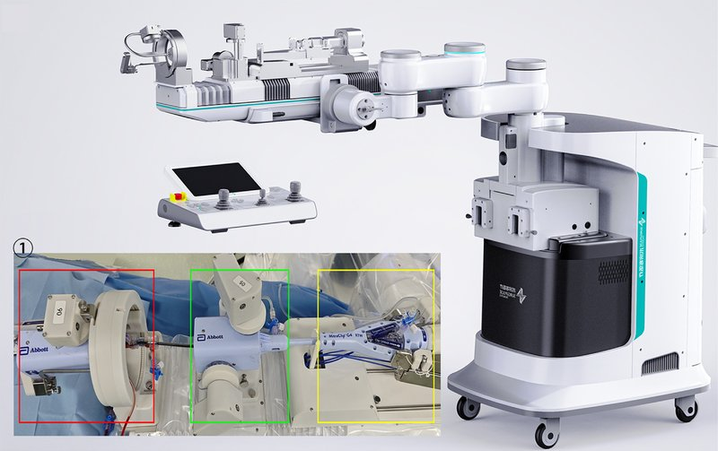

Commercial and clinical-stage systems · surgipulse_chen2024
SurgiPulse
SurgiPulse robot-assisted mitral valve interventional repair system (robotic M-TEER)

1 / 6


- Family
- Commercial and clinical-stage systems (clinical-stage)
- Devices
- 3 devices at once: three single-use sterile functional modules drive the steerable guiding catheter, the clip delivery catheter and the clip control sheath; compatible with MitraClip G4 (Abbott) and similar TEER systems; MitraClip G4 in 5 and Kyrin (Shenqi Medical) in 4 patients (zhu2025_firstinman); SQ-Kyrin-M in the 2024 case (chen2024_firstinhuman)
- Degrees of freedom
- N.R. (five-joint positioning arm)
- Push
- Other drives
- Twist
- Not reported
- Tested up to
- Human
- Sim-to-real
- None found — No simulation-trained controller found for this robot.
Testing
- Highest level
- Human
- What was tested
- 1 patient, 2 clips, MR severe -> mild, 29 min (chen2024_firstinhuman, PMC HTML); 9 patients, multicentre single-arm, 2 operators, 2 telerobotic via 5G; transseptal sheath placement and clip release done by hand (zhu2025_firstinman)
- Key numbers
- 2024: procedure 29 min; baseline EROA 0.93 cm2, vena contracta 15.1 mm (chen2024_firstinhuman). 2025: 9/9 successful, 12 clips (7 MitraClip G4 XTW, 5 Kyrin), robotic time median 38 min (range 22-127), 36.5 min per clip; at 30 days MR <=2+ in all and 0-1+ in 7/9, NYHA I-II 8/9, no deaths, rehospitalisations or complications (zhu2025_firstinman)
Mechanism
- Push (translation)
- other: motorised sterile adapters on the TEER handles (mechanism N.R.)
- Twist (rotation)
- N.R.
- Device range
- N.R.
- Target anatomy
- structural heart: mitral valve (transcatheter edge-to-edge repair)
Sensing and interface
- Force sensing
- N.R.
- Leader and haptics
- control cockpit with 3 joysticks and buttons, one per control component (zhu2025_firstinman); doctor console with buttons and a rocker, on-site or remote (chen2024_firstinhuman); force feedback N.R.
- Imaging
- TEE (echo-guided) + fluoroscopy, operator outside the cath lab (chen2024_firstinhuman); 2 telerobotic procedures over 5G (zhu2025_firstinman)
- Sterility
- 3 single-use sterile functional modules (zhu2025_firstinman); sterile adapters between motors and instruments (chen2024_firstinhuman)
Size
- Footprint (mm)
- N.R.
- Mass (kg)
- N.R.
Simulation
- Simulation model
- none found
- Sim-trained controller
- none found
Versions
- Lineage
- 2024 first-in-human robotic M-TEER (chen2024_firstinhuman; also Zhu D et al., JACC Cardiovasc Interv 2024;17:1505-1506, 'pure echo guidance', cited as zhu2025 ref. 1, not read) -> 2025 multicentre first-in-man series, 9 patients including 2 telerobotic over 5G (zhu2025_firstinman)
Sources
- First-in-human robotic-assisted transcatheter mitral edge-to-edge repair for treatment of severe mitral regurgitation · The International Journal of Cardiovascular Imaging, 2024 · doi:10.1007/s10554-024-03227-3 [chen2024_firstinhuman]
- First-in-Man Study of Robotic-Assisted Transcatheter Edge-to-Edge Repair · JACC: Cardiovascular Interventions, 2025 · doi:10.1016/j.jcin.2025.01.437 [zhu2025_firstinman]
Notes
- Notes
- Company product; structural-heart scope; may belong in A4's commercial list. A telerobotic 8-case M-TEER series attributed to SurgiPulse appears in a 2025 EuroIntervention review (WebSearch snippet, not verified). | X2 2026-11-08: zhu2025 read in full: 9 patients, 3 devices driven at once. Clinical site corrected to Fuwai Yunnan Hospital (Kunming). The 2024 echo-guided first-in-man letter (Zhu 2024) and chen2024 both claim a first case; whether they describe the same patient is not stated.
This record
- Read level
- full — partial (PMC HTML via WebFetch, chen2024_firstinhuman); full (zhu2025_firstinman)
- Picture
- zhu2025_firstinman Fig. 1(A) (articulating arm with control platform and 3 functional modules, control cockpit, central control computer), JACC Cardiovasc Interv 2025;18:953-955, p. 2, ↗ — licence: publisher copyright (ACC Foundation / Elsevier); grade C
- Picture changes
- native extract (embedded 1943 x 2002 holds panels A and B); cropped to panel A; panel letter A and the callout numbers 1, 2, 3 on the plain background filled by row-wise interpolation of the neighbouring background (no LaMa); the inset photo and its own callout left as they are; none upscaled
- Found by
- gap: Gap searches for robots the other searches missed.
- Data
- JSON · YAML:
records/robots/surgipulse_chen2024.yaml - Correction
- Suggest a correction [repository not created yet]